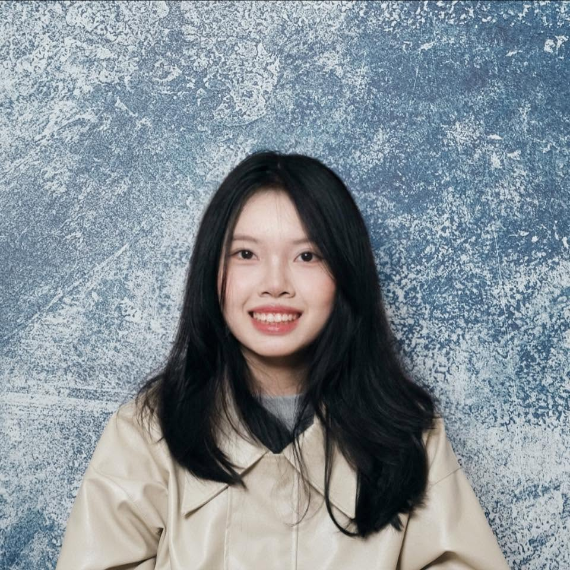

2026
ACL · Long PaperKnowledge Distillation
MTA: Multi-Granular Trajectory Alignment for Large Language Model Distillation
Pham Khanh Chi, Quoc Phong Dao, Thuat Nguyen, Linh Ngo Van, Trung Le, Thanh Hong Nguyen
Hello, I’m Chi!
I’m an NLP researcher working on efficient language models, representation alignment, and neural topic modeling.

Selected work 01
Pham Khanh Chi, Quoc Phong Dao, Thuat Nguyen, Linh Ngo Van, Trung Le, Thanh Hong Nguyen
Quoc Phong Dao, Hoang Son Nguyen, Pham Khanh Chi, Tung Nguyen, Linh Ngo Van, Nguyen Thi Ngoc Diep, Trung Le
Quoc Phong Dao, Hoang Son Nguyen, Pham Khanh Chi, Linh Ngo Van, Nguyen Thi Ngoc Diep, Thien Huu Nguyen, Trung Le
Duc Trung Vu, Pham Khanh Chi, Dat Phi Van, Linh Ngo Van, Dinh Viet Sang, Trung Le
Pham Khanh Chi, Tran Vuong Hoang, Dinh Viet Sang, Linh Ngo Van
Pham Khanh Chi, Tue Le, Anh-Cuong Le, Linh Ngo Van
Code & projects 02
Multi-granular trajectory alignment for large language model distillation.
Dual-space weighting and time-warped alignment across tokenizers.
Span representation alignment for cross-tokenizer model distillation.
Teacher-anchored layer alignment with sharpness-aware minimization.
A living reading list for knowledge distillation of vision-language models.
My working fork of the curated VLM knowledge-distillation collection.
A little about me 03
I’m an undergraduate researcher in the Advanced Data Science and Artificial Intelligence program at Hanoi University of Science and Technology, and a research member of the Foundation Model Lab, BKAI Center.
I care about efficient, interpretable language models—and especially about what their internal representations can teach us.